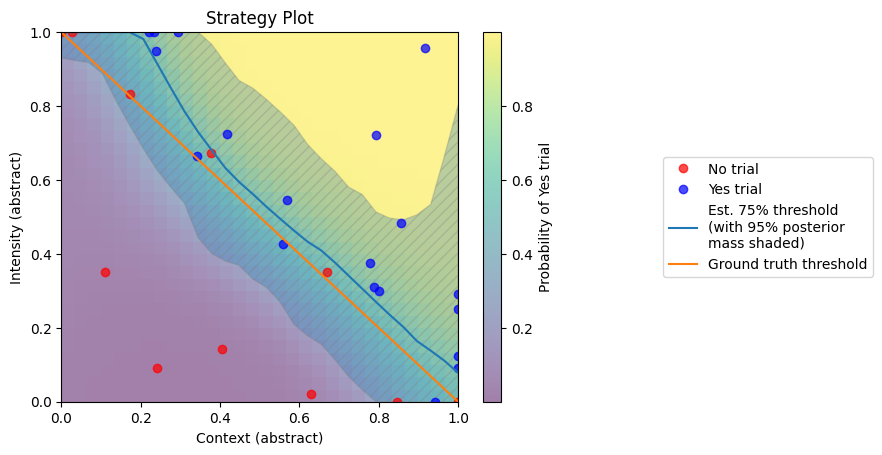

In this example, we demonstrate how to run a 2-dimensional detection-threshold experiment.
Please be aware that this package is still under development and the API is subject to change. This example will be updated as needed.
First we fix the random number generators so that our code is reproducible:
import numpy as np
import torch
# Fix random seeds
np.random.seed(0)
torch.manual_seed(0)
To use AEPsych, you have to create an experiment configuration file. For this example, we will use the example configuration file found under aepsych/configs/single_lse_example.ini.
On each trial of the experiment we show a single stimulus controlled by 2 parameters, par1 and par2. On each trial, the participant indicates whether or not they detected the stimulus. The goal is to find the detection threshold. See the contents of the configuration file for further explanation.
The configuration file is used to configure the server object that will tell us which parameters to try on every trial:
from aepsych.server import AEPsychServer
# Create a server object configured to run a 2d threshold experiment
server = AEPsychServer()
server.configure(config_fnames=['../configs/single_lse_example.ini'])
In a real experiment you would write your own code to display stimuli and collect responses, but in this toy example we will simulate participant responses. We define the true 75% detection threshold to be where par1 + par2 = 1. We simulate participant responses using bernoulli trials, with 1 indicating a detection and 0 indicating no detection.
from scipy.stats import bernoulli
from scipy.special import expit, logit
from scipy.stats import norm
# Define the 75% to be where par1 + par2 = 1
def get_response_probability(params):
m = 10
b = logit(.75) - m
p = expit(m * params.sum(1) + b)
return p
# Simulate participant responses; returns 1 if the participant detected the stimulus or 0 if they did not.
def simulate_response(trial_params):
par1 = trial_params['par1'][0]
par2 = trial_params['par2'][0]
params = np.array([[par1, par2]])
p = get_response_probability(params)
response = bernoulli.rvs(p)
return response
On each trial of the experiment, we will ask the server what parameter values to try next, collect a response from the participant, and then tell the server the outcome so that it can update its model.
while not server.strat.finished:
# Ask the server what the next parameter values to test should be.
trial_params = server.ask()
# Simulate a participant response.
outcome = simulate_response(trial_params)
# Tell the server what happened so that it can update its model.
server.tell(outcome, trial_params)
After all trials have completed, we can plot the results.
from aepsych.plotting import plot_strat
from scipy.stats import norm
# Plot the results
plot_strat(server.strat, title='Strategy Plot', true_testfun=get_response_probability)

See the complete code below:
import numpy as np
import torch
from aepsych.server import AEPsychServer
from aepsych.plotting import plot_strat
from scipy.stats import bernoulli
from scipy.special import expit, logit
from scipy.stats import norm
# Define the 75% to be where par1 + par2 = 1
def get_response_probability(params):
m = 10
b = logit(.75) - m
p = expit(m * params.sum(1) + b)
return p
# Simulate participant responses; returns 1 if the participant detected the stimulus or 0 if they did not.
def simulate_response(trial_params):
par1 = trial_params['par1'][0]
par2 = trial_params['par2'][0]
params = np.array([[par1, par2]])
p = get_response_probability(params)
response = bernoulli.rvs(p)
return response
# Fix random seeds
np.random.seed(0)
torch.manual_seed(0)
# Create a server object configured to run a 2d threshold experiment
server = AEPsychServer()
server.configure(config_fnames=['../configs/single_lse_example.ini'])
while not server.strat.finished:
# Ask the server what the next parameter values to test should be.
trial_params = server.ask()
# Simulate a participant response.
outcome = simulate_response(trial_params)
# Tell the server what happened so that it can update its model.
server.tell(outcome, trial_params)
# Plot the results
plot_strat(server.strat, title='Strategy Plot', true_testfun=get_response_probability)